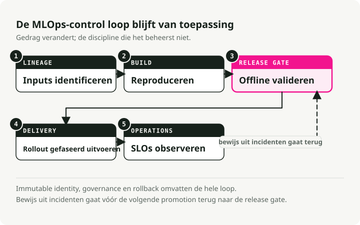
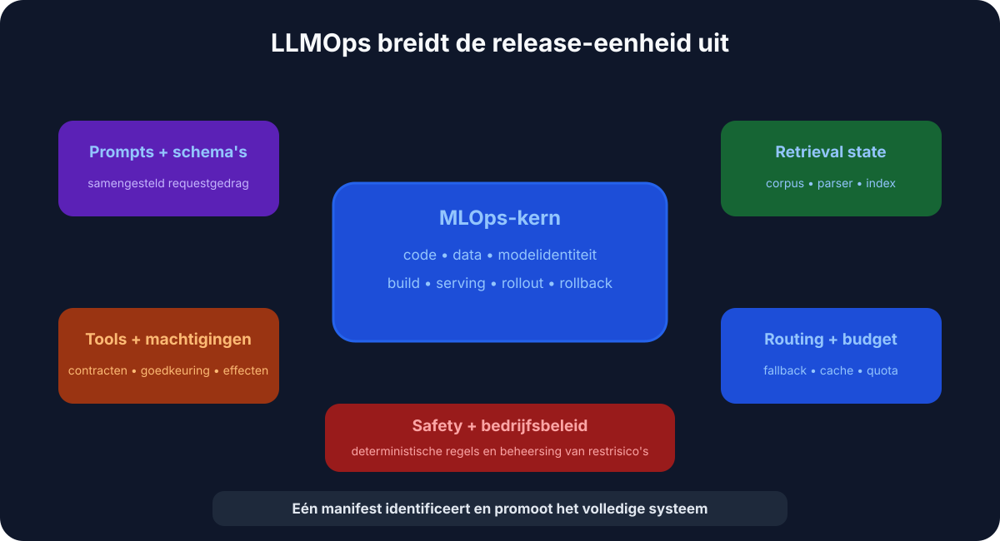
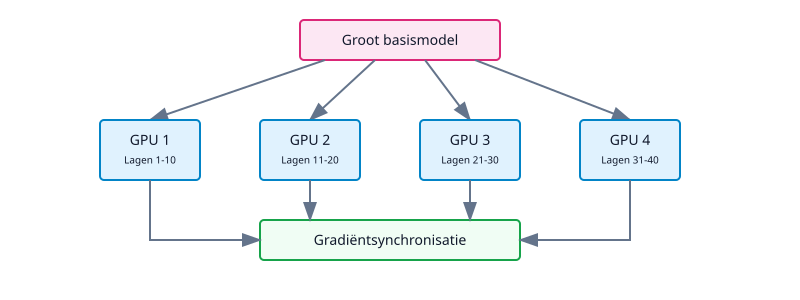
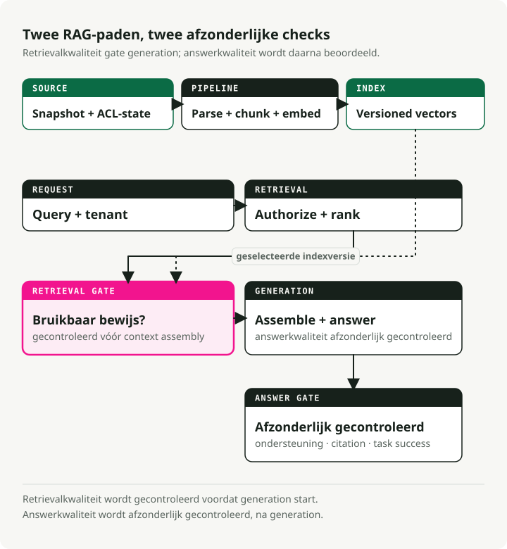
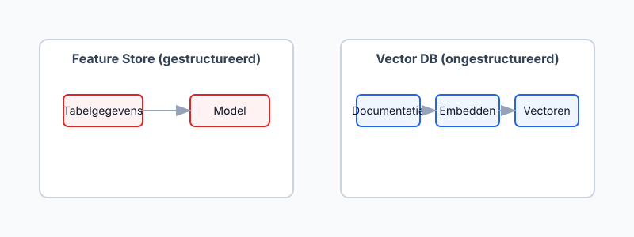
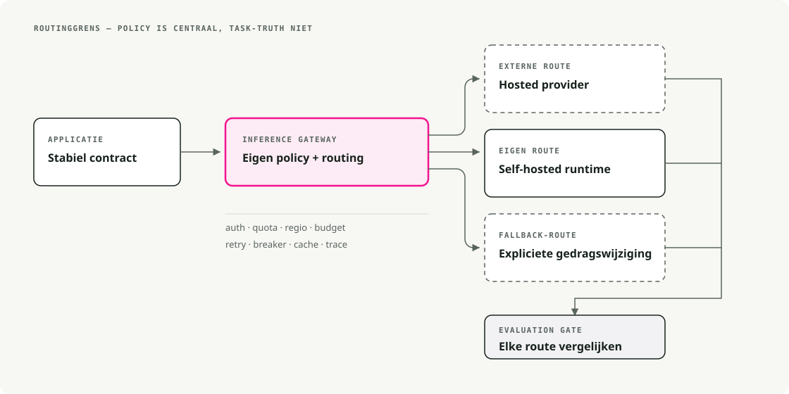
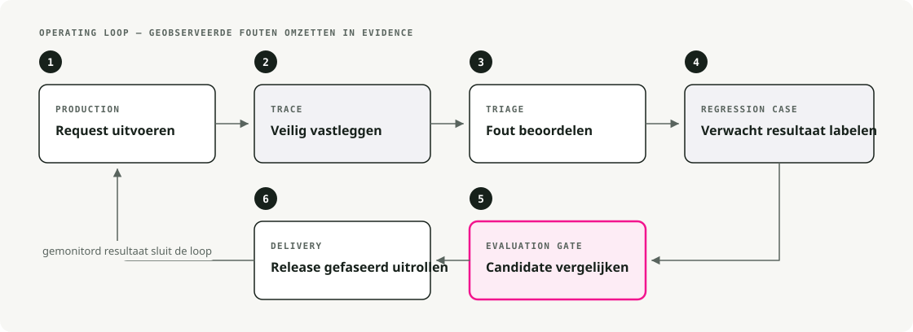

Automatische vertaling
Dit artikel is automatisch vertaald vanuit de oorspronkelijke Engelse versie.
MLOps versus LLMOps: Infrastructuur voor foundation models en LLM-systemen
Foundation models hebben de meeste aannames die ten grondslag liggen aan klassieke MLOps ondermijnd. Hier wordt uitgelegd wat er is veranderd, wat nog steeds van kracht is, en welke patronen de ontstane lacunes hebben opgevuld.
Kort samengevat: LLMOps breidt MLOps uit met prompt-/versienummerbeheer, opslag- en ophaalpijpleidingen, modelgateway’s, evaluatiehulpmiddelen, beperkende regels en mogelijkheden voor observabiliteit voor niet-deterministische uitvoer. Houd de discipline van MLOps aan, maar voeg metingen toe met betrekking tot context, kosten, vertraging en de kwaliteit van de gegenereerde antwoorden.
Klassieke MLOps vóór foundation models
Een paar jaar geleden betekende MLOps voornamelijk DevOps voor machine learning – het automatiseren van het levenscyclus van datavoorbereiding tot implementatie en monitoring. Modellen waren klein genoeg om vanaf nul te worden getraind op specifieke domeindata, en de infrastructuur weerspiegelde dit.

1.1. End-to-end pipelines
Teams ontwikkelden pipelines voor gegevensextractie, training, validatie en implementatie. Airflow zorgde voor de orkestratie van ETL-processen en trainingen. CI/CD uitvoerde tests en plaatste modellen in productieomgevingen. Modellen werden geleverd als Docker-containers die REST-endspunten of batchwerkzaamheden verwerken. Het doel van dit alles was herhaalbaarheid en automatisering.
1.2. Experiment tracking en model versioning
MLflow en Weights & Biases vormden de standaard voor het bijhouden van uitvoeringsloggen, hyperparameters en metrics. Data scientists konden experimenten vergelijken en resultaten betrouwbaar reproduceren. Modelregistries leverden versienummers op, waardoor het eenvoudig was om terug te gaan naar een eerdere versie wanneer een nieuw model minder goed presteerde.
1.3. Continu trainen en CI/CD
Pipelines waren ingericht op continue integratie van nieuwe gegevens. Een typische configuratie werd ’s nachts of wekelijks opnieuw getraind zodra er nieuwe gegevens binnenkwamen, voerde een reeks tests uit en zette automatisch een deploy in als alles succesvol was. Jenkins en GitLab CI/CD zorgden ervoor dat elke verandering in gegevens of code betrouwbaar de pipeline activeerde.
1.4. Infrastructuur en dienstverlening
Voor de dienstverlening was relatief weinig capaciteit nodig — een paar CPU-kernen of één GPU voor real-time inferentie. Kubernetes en Docker vormden de standaard voor schaalbare inferentiediensten. Monitoring omvatte drie aspecten: prestatiemetingen (latentie, doorvoersnelheid, geheugen), modellemetingen (nauwkeurigheid, drift) en systeemgezondheid (uptime, foutpercentages).
1.5. Featurestores en gegevensbeheer
In de financiële sector en e-commerce waren ingenieursgemaakte features even belangrijk als het model zelf. Featurestores boden een centrale plek om deze features te beheren en zorgden voor consistentie tussen trainen en dienstverlening. Gestructureerde gegevens en feature engineering vormden het kernpunt. Ongestructureerde gegevens — tekst, afbeeldingen — werden apart verwerkt, buiten deze stores.
Deze configuratie werkte goed totdat modellen steeds groter werden.
2. De paradigma-verandering: opkomst van grote fundamentale modellen
Rond 2018–2020 veranderde de situatie snel. Onderzoekers begonnen fundamentale modellen vrij te geven — zeer grote modellen die vooraf getraind waren op uitgebreide datasets en die konden worden aangepast voor veel verschillende taken.
De ontwikkeling ging snel:
- 2018–2019: BERT en GPT-2 maakten transfer learning op grote schaal haalbaar.
- 2020–2021: GPT-3 en PaLM toonden wat een enorme schaalwerking kan bereiken.
- 2021–2023: Afbeeldingsmodellen zoals DALL-E en Stable Diffusion brachten generatieve AI naar de mainstream.
- 2023–2024: Foundation models werden de standaardinfrastructuur — beschikbaar op Hugging Face, AWS Bedrock, Vertex AI Model Garden en rechtstreeks bij API-aanbieders.

Dit is wat foundation models daadwerkelijk hebben veranderd aan de ML-infrastructuur.
2.1. Vooraf getrainde modellen in plaats van vanaf nul
In plaats van modellen vanaf nul te trainen, begonnen teams met een vooraf getraind model en pasten dit toe op de specifieke taak. De trainingsduur daalde van weken naar uren. De benodigde hoeveelheid data verminderde van miljoenen voorbeelden tot duizenden. Kleinere teams konden nu serieuze AI-producten uitbrengen zonder dat ze beschikten over een onderzoeksteam.
De grootste modellen (met miljarden parameters) worden meestal direct gebruikt via APIs of aangepast met lichte adapters. De vraagstelling veranderde: minder “hoe bouw ik een model?” en meer “hoe gebruik ik en integreer ik er eentje?”
2.2. Modelgrootte en rekenkrachtvereisten
Op schaal van LLM’s moet ook de rest van de infrastructuur worden aangepast. Een model met 175 miljard parameters is niet zomaar een grotere versie van een model met 50 miljoen parameters – het past niet op dezelfde hardware, wordt niet op dezelfde manier getraind en werkt ook niet op dezelfde manier.
De problemen die hierdoor ontstaan:
- Training vereist krachtige hardware (GPUs, TPUs) en gecentraliseerde rekenkracht.
- Model parallelism splitst één model op over meerdere GPUs.
- Data parallelism synchroniseert meerdere GPU-workers tijdens het trainen.
- Inference heeft vaak meerdere GPUs of gespecialiseerde runtimes nodig om de vertraging onder controle te houden.
DeepSpeed en ZeRO (Zero Redundancy Optimizer) zijn specifiek ontwikkeld om het trainen van enorme modellen haalbaar te maken. De infrastructuureisen zijn daardoor met een groot aantal ordes toegenomen.
2.3. Het ontstaan van LLMOps
Het draaien van deze modellen in productie vereiste uitbreidingen op de klassieke MLOps. Dit leidde tot LLMOps — MLOps die zijn gespecialiseerd voor grote modellen, gebaseerd op dezelfde principes maar met andere soorten problemen:
- Compute: het beheren van dure GPU-clusters in plaats van CPU-pools.
- Prompt engineering: het vormgeven van het gedrag door middel van invoerontwerp.
- Safety monitoring: het detecteren van bias, schadelijke inhoud en data-lekken.
- Performance management: het afwegen van vertraging, kwaliteit en kosten per token.
Problemen die bij kleinere modellen nauwelijks opvielen — zoals gebiaseerde teksten of gelekte trainingsdata — vormden bij LLM’s echte risico’s.

NVidia’s diagram toont hoe deze specialisaties op elkaar zijn gestapeld: klassieke MLOps aan de buitenkant, gevolgd door GenAI Ops (elk generatief model), vervolgens LLMOps (specifiek grote taalmodellen) en ten slotte RAGOps voor retrieval-augmented systemen. Het doel van deze stapeling is dat elke binnenste laag is gebaseerd op de praktijken van de buitenste lagen – ze vervangen ze niet.
Het trainen van een model met een miljard parameters ligt buiten de capaciteit van één enkele machine. Moderne infrastructuur coördineert het trainingsproces over meerdere nodes:

Twee belangrijke vormen van splitsing spelen een rol:
- Modelparallelisme: de lagen van het model worden over meerdere GPUs verdeeld (elke GPU voert een deel van de forward-pass uit).
- Dataparallelisme: het model wordt op meerdere GPUs gekopieerd en de trainingsgegevens worden opgedeeld, waarna de gradients worden gesynchroniseerd.
PyTorch Lightning en Horovod zorgen voor algemeen distribueerd trainen. NVIDIA’s Megatron-LM is de standaard voor grote transformer-modellen. Google’s JAX/TPU-stack wordt gebruikt voor TPU-clusters.
Een paar jaar geleden trainden de meeste teams nog op één server. Tegenwoordig starten ML-platforms taken op GPU-clusters, beheren fouten en verzamelen gradients van tientallen of honderden workstations, zonder dat de ingenieur zich hiermee hoeft bezig te houden.
3.2. Efficiënte technieken voor fine-tuning
Zelfs het fine-tunen van een model met miljarden parameters kan kostbaar zijn. Precies daarom bestaan er parameter-efficiënte methoden:
- LoRA (Low-Rank Adaptation): er wordt slechts een klein aantal adapterparameters getraind; de basisgewichten blijven bevroren. Dit leidt tot een aanzienlijke besparing op rekenkracht en geheugen.
- Prompt tuning: alleen de prompt-embeddings worden geoptimaliseerd; het model zelf blijft bevroren.
- Adaptermodules: er worden kleine, traintbare lagen ingevoegd tussen de bevroren lagen.
Het configureren van LoRA met peft:
from peft import LoraConfig, get_peft_model
# Configure LoRA
peft_config = LoraConfig(
r=16,
lora_alpha=32,
target_modules=["q_proj", "v_proj"],
lora_dropout=0.05,
bias="none",
task_type="CAUSAL_LM"
)
# Apply to base model
model = get_peft_model(base_model, peft_config)
model.print_trainable_parameters()
De infrastructuur moet een meervoudige werkflow ondersteunen: een basismodel ophalen van een hub, gefineerde gewichtsveranderingen toepassen en het gecombineerde model implementeren. Traditionele pipelines moesten worden aangepast om deze stap van personalisatie aan te kunnen.
3.3. Prompt engineering & management
Het nieuwe element in moderne ML-pipelines is de prompt. Met LLM’s bepaalt de prompt grotendeels wat het model doet — veel meer dan featurevectoren ooit deden in klassieke ML.
Dit heeft praktische gevolgen. Teams onderhouden nu promptbibliotheken, versien ze zoals code, voeren A/B-tests uit op verschillende varianten, en slaan promptversies samen met modelversies op in het register. Dit verschilt echt van klassieke ML, waarin invoer slechts bestond uit featurevectoren. Frameworks als LangChain beschouwen promptoptimalisatie als een essentieel kenmerk.
Een eenvoudige ontwikkeling ziet er als volgt uit:
v1: "Classify this text as positive or negative: {text}"
v2: "You are a sentiment analyzer. Classify: {text}"
v3: "Analyze sentiment. Return only 'positive' or 'negative': {text}"
Elke versie levert andere resultaten op. Het bijhouden en testen van prompts is even belangrijk geworden als het monitoren van de modelgewichten.
3.4. Retrieval-Augmented Generation (RAG)
Foundationmodellen hebben een vaste kennisdatum en een beperkt contextvenster. Om ervoor te zorgen dat de antwoorden actueel en gebaseerd blijven, is Retrieval-Augmented Generation (RAG) uitgegroeid tot een standaardpraktijk.

In plaats van voortdurend een model op nieuwe gegevens opnieuw te trainen — wat traag en duur is — haalt RAG op het moment van de query relevante documenten op en voegt deze toe aan de prompt als context.
Een vereenvoudigde RAG-chain in LangChain:
from langchain.vectorstores import Pinecone
from langchain.llms import OpenAI
from langchain.chains import RetrievalQA
# 1. Load the vector database
vector_db = Pinecone.from_existing_index("my-index", embeddings)
# 2. Initialize the LLM
llm = OpenAI(temperature=0)
# 3. Create the RAG chain
qa_chain = RetrievalQA.from_chain_type(
llm=llm,
chain_type="stuff",
retriever=vector_db.as_retriever()
)
# 4. Ask a question
response = qa_chain.run("How does LLMOps differ from MLOps?")
De nieuwe componenten van de infrastructuur:
- Vectordatabases (Pinecone, Weaviate, FAISS, Milvus) voor snelle similariteitszoeken op embeddings.
- Embeddingmodellen om documenten en queries om te zetten in vectoren.
- Indexbeheer om embeddings in sync te houden met de bron van waarheid.
Vectordatabases hebben grotendeels de rol overgenomen die vroeger door traditionele featurestores werd vervuld. Ongestructureerde gegevens en semantische zoekoplossingen zijn nu het centrum van de activiteiten, in plaats van handmatige feature-engineering.
3.5. Gegevensstroom en real-time datafeeds
Moderne applicaties — vooral assistenten die worden aangedreven door LLM’s — nemen continu gegevens op: chatconversaties, sensordata, evenementenstromen. Deze gegevens moeten de kennis van het model bijwerken (via RAG) of direct responsen triggeren.
Klassieke MLOps was batchgericht (dagelijks of wekelijks hertrainen). Moderne LLMOps is meestal streamgericht: Kafka en platformen voor evenementenstroom, real-time databases (Redis, DynamoDB), online featurestores met continue updates, en stromende embedding-pipelines die vectorindexen up-to-date houden.
De grens tussen dataengineering en MLOps is vager geworden. Datapipelines leveren nu rechtstreeks inzichten op, niet alleen voor training.
3.6. Schaalbare en gespecialiseerde serverinfrastructuur
Het serveren van een enorm model is op zichzelf al een ingenieursproject. Drie aspecten zijn hierbij het belangrijkst.
Hoge doorvoer en lage vertraging bij serveren. Interactieve applicaties hebben snelle responsen nodig. Dat vereist acceleratie via GPU/TPU, kwantificatie van modellen om gewichten te comprimeren en de inferentie te versnellen, batchverwerking op GPU om meerdere verzoeken parallel te verwerken, en geoptimaliseerde engines zoals NVIDIA’s TensorRT, Triton Inference Server of DeepSpeed-Inference.
Serverless en elastisch schalen. Platforms zoals Modal presenteren zichzelf als “AWS Lambda, maar met GPU-ondersteuning” – jij levert de code, zij zorgen voor de infrastructuur en het schalen. Je betaalt niet voor idle servers; de rekenkracht wordt op verzoek geactiveerd, schaalt terug naar nul wanneer er niets gebeurt en groeit onder belasting. De nadelen zijn de cold-start-latentie, het gebrek aan staat en minder controle over de uitvoeringstijd. Het is geschikt voor onregelmatige werklasten waarbij het zinloos is om een GPU-cluster continu draaiende te houden.
Gedistribueerd modelserveren. Voor modellen die te groot zijn voor één GPU, wordt de inferentie zelf gedistribueerd. Het model wordt opgedeeld over meerdere machines, waarbij elke machine een deel van de berekening uitvoert. Het serveren van een model met 175 miljard parameters op locatie vereist in de praktijk meerdere GPUs die samenwerken. Moderne infrastructuur moet gedistribueerde inferentiereplicaten starten en verzoeken routeren naar het juiste deel.
3.7. Monitoring, observabiliteit en beperkende maatregelen
Grote modellen kunnen op manieren verkeerde of onveilige output genereren die kleine modellen niet kunnen. Monitoring kent nu drie lagen.
Prestaties en betrouwbaarheid. De basisprincipes blijven gelden: latentie, doorvoersnelheid, geheugen, GPU-utilisatie en kosten. Autoscaling is belangrijker omdat GPU-minuten duur zijn – schakel bij hoge belasting over op een kleiner model als het grote model de wachtrij niet waard is.
Outputkwaliteit en veiligheid. Let nu op wat het model zegt, en niet alleen of het heeft gereageerd. Inhoudsfiltering voor haatpraat, PII en schadelijke inhoud. Moderatie-API’s (van OpenAI of van u zelf). Continu beoordelen van vooringenomenheid. Beperkende maatregelen die vijandige invoer tegenhouden en ervoor zorgen dat de uitvoer binnen de grenzen blijft. Niets hiervan is optioneel in productieomgevingen voor LLMOps.
Feedbackcycli. Continu verbeteren omvat nu ook mensen. Verzamel interacties (lajks, correcties, beoordelingen), gebruik deze om prompts te finetunen of aan te passen, en voor kritieke systemen gebruik RLHF (Reinforcement Learning from Human Feedback) om voorkeuren in het model op te nemen. De infrastructuur moet deze feedbackgegevens veilig verzamelen en beheren.
4. Evoluerende systeemarchitectuur en ontwerppatronen
Met al deze nieuwe eisen: hoe worden ML-systemen vandaag de dag dan eigenlijk gebouwd? Er komen steeds weer dezelfde patronen terug.
4.1. Modulaire pipelines en orchestratie
Klassieke tools (Kubeflow Pipelines, Apache Airflow) worden nog steeds gebruikt voor het finetunen van workflows, batchscoring en periodiek hertrainen. Nieuwere tools — Metaflow, Flyte, ZenML — bieden Python-achtige workflows die direct kunnen worden geïntegreerd in ML-bibliotheken. Voor lage vertraging bij inferentie wordt de applicatiecode vaak gebruikt in plaats van een zware workflow-engine.
De praktische verandering: ingenieurs hoeven hun ontwikkelomgeving niet te verlaten om de weg van gegevens naar implementatie te beheren.
4.2. Modelhubs en registers
Modelbeheer is verplaatst naar gecentraliseerde hubs. Hugging Face Hub bevat duizenden modellen, datasets en scripts – een alles-in-eén oplossing met een plug-and-play-architectuur (modellen worden bij het opstarten geladen). Interne registers zoals MLflow en SageMaker Model Registry zorgen voor maatwerkmodellen, vaak gecombineerd met externe foundationmodellen.
De verschuiving: in plaats van alles intern te ontwikkelen, plannen ingenieurs hoe ze derderangsmodellen kunnen finetunen en aanpassen. Dat vereist een andere denkwijze, maar gaat veel sneller.
4.3. Feature stores versus vectordatabases
De datalayer heeft een nieuwe vorm gekregen:

Traditionele feature stores verwerkten gestructureerde gegevens door middel van handmatige feature engineering. Moderne vectordatabases (Pinecone, Weaviate, Chroma, Milvus) hanteren hoge-dimensionale embeddings, snelle similariteitszoeken, semantische deduplicatie en RAG.
In echte systemen zie je beide benaderingen: een vector DB voor semantisch zoeken in ongestructureerde gegevens en een data warehouse voor gestructureerde analyses. Ze vormen geen vervanging voor elkaar.
4.4. Geïntegreerde platforms (end-to-end)
De complexiteit van moderne ML heeft teams ertoe aangezet om gebruik te maken van end-to-end platforms die de infrastructuurlaag abstracteren.
De grote cloudplatforms spelen hierin actief mee:
- Google Vertex AI: automatisch gedistribueerd trainen op TPU-pods, Model Garden met LLM’s, één-klik implementatie.
- AWS SageMaker: gedistribueerd trainen, modelparallelisme, plus Bedrock voor gehoste foundation models.
- Azure ML: geïntegreerd trainen, implementatie en monitoring.
Deze bieden beheerde diensten zoals “dit 20B-parametermodel finetunen op uw eigen gegevens” of “uw tekst embedden en indexeren voor zoekfuncties”. Daarnaast zijn er ook open-source- en startup-hulpmiddelen beschikbaar: MosaicML (nu Databricks) voor efficiënt trainen en implementeren van grote modellen, Argilla en Label Studio voor het labelen van gegevens en het maken van promptdatasetten, en ClearML en MLflow voor het bijhouden van experimenten in relatie tot de uitvoering van pipelines.
4.5. Inferentiegates en APIs
Zodra u modellen in verschillende groottes hebt, heeft u een manier nodig om verzoeken intelligent te routeren. Dat is een inferentiegate:

Handig voor routen op basis van vertragingseisen, het leveren van verschillende modellen aan verschillende abonnementsniveaus, A/B-testen van nieuwe modellen op een deel van het verkeer, en het terugvallen op kleinere modellen bij hoge belasting. De gateway scheidt de API die door klanten wordt gebruikt van de implementatie van de modellen, waardoor wijzigingen en experimenten veel minder storend zijn.
4.6. Agentensystemen
Het nieuwste patroon zijn AI-agenten — systemen die dynamisch sequenties van acties kiezen in plaats van een vaste reeks stappen uit te voeren. Een agent kan externe hulpmiddelen oproepen (rekenmachines, zoekmachines, databases), zijn werkwijze op runtime bepalen op basis van de context, en verschillende modellen gebruiken voor verschillende ondertaken.
Frameworken zoals de agentmodus van LangChain, het functioncallen van OpenAI en systemen in de stijl van AutoGPT maken dit haalbaar. De bijbehorende operationele praktijken (soms aangeduid als “AgentOps”) zijn geen optie: monitoring om ongewenste acties op te sporen, gedetailleerd logging om beslissingspaden te traceren, en beperkende maatregelen om te voorkomen dat de agent dingen doet die niet zijn toegestaan.

Agentensystemen zijn nog niet wijdverspreid in productieomgevingen, maar een groot deel van de ontwikkelingen op het gebied van LLMOps bevindt zich daar.
5. Beginnen met LLMOps
Als je nieuw bent in dit alles, is het LLMOps-ecosysteem behoorlijk om te overzien. Hier is het pad dat ik zou aanbevelen:
- Speel met APIs. Begin met OpenAI of Anthropic om kennis te maken met prompt engineering.
- Bouw een RAG-app. Gebruik LangChain of LlamaIndex om een demo te maken waarbij je kunt “chatten met je PDF”. Onderweg kom je vectordatabases en retentiemethoden tegen.
- Probeer fine-tuning. Gebruik Hugging Face om een klein model (Llama-3-8B of Mistral-7B) te fine-tunen op een aangepast dataset in Google Colab.
- Implementeer. Zet eerst vLLM of Ollama lokaal op, en verplaats het daarna naar een cloudprovider.
6. Conclusie: van MLOps naar LLMOps en verder
De fundamentele principes van MLOps — automatisering, reproduceerbaarheid en betrouwbare implementatie — blijven geldig. Wat wel is veranderd, is de schaal (miljarden parameters), de aanpak (adaptatie van foundation models in plaats van trainen vanaf nul), de datalayer (vectordatabases die samenwerken met feature stores) en het monitoringoppervlak (inhoudssicherheid, niet alleen latentie). LLMOps is voortgekomen uit deze veranderingen. De volgende golf — AgentOps en RAGOps — doet hetzelfde op een hoger niveau.
Belangrijkste conclusies
- LLMOps vervangt MLOps niet; het voegt nieuwe foutmogelijkheden toe rondom prompts, retentie, modelaanroepen en gegenereerde tekst.
- Een foundation-modelsysteem heeft evaluatie nodig vóór implementatie, en niet alleen monitoring na implementatie.
- Vectorstores en prompttemplates worden productieartefacten die geversioneerd en teruggedraaid moeten kunnen worden.
- Kosten en latentie zijn belangrijke betrouwbaarheidsmetrieken, omdat modelaanroepen onderdeel zijn van het serveringsproces.
Referenties
- Documentatie van MLflow - Experimentvervolging en modelbeheer. Kubeflow-documentatie - Orchestratie van ML-workflows. Documentatie voor de evaluatie van LangSmith - Evaluatie van LLM-toepassingen. OpenTelemetry GenAI-semantische conventies - Het traceren van modelaanroepen en agentactiviteiten.